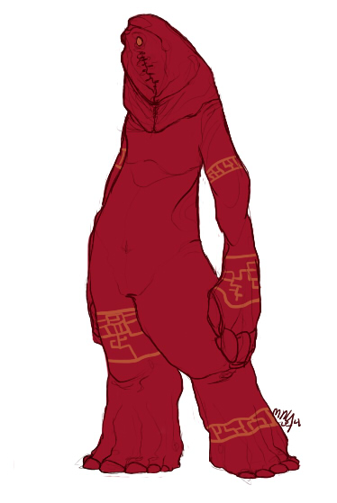
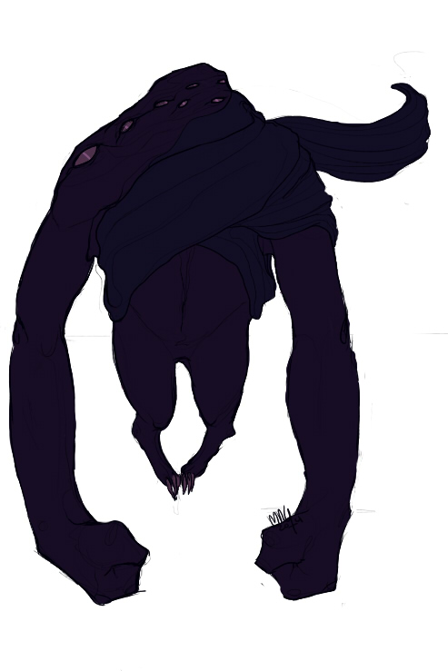
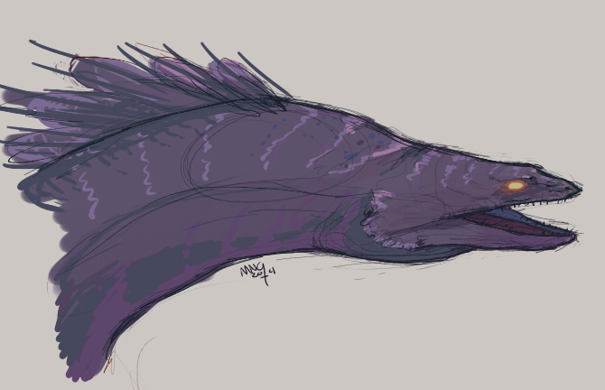
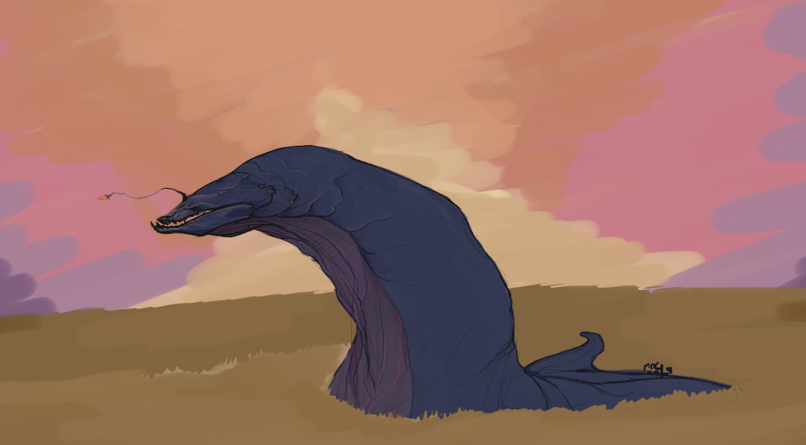
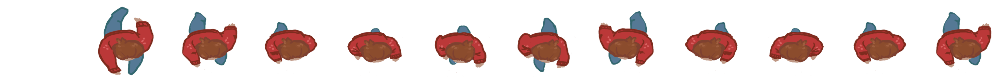
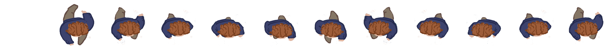
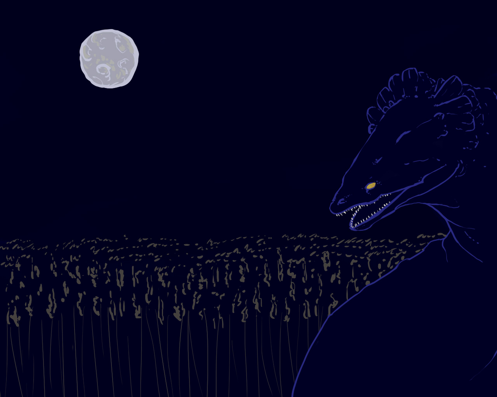
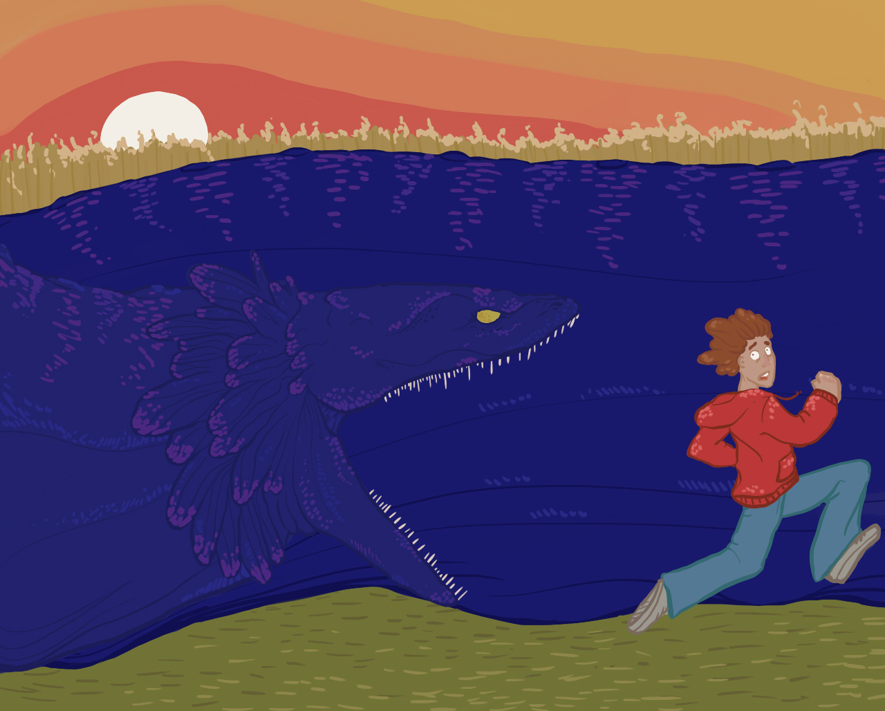
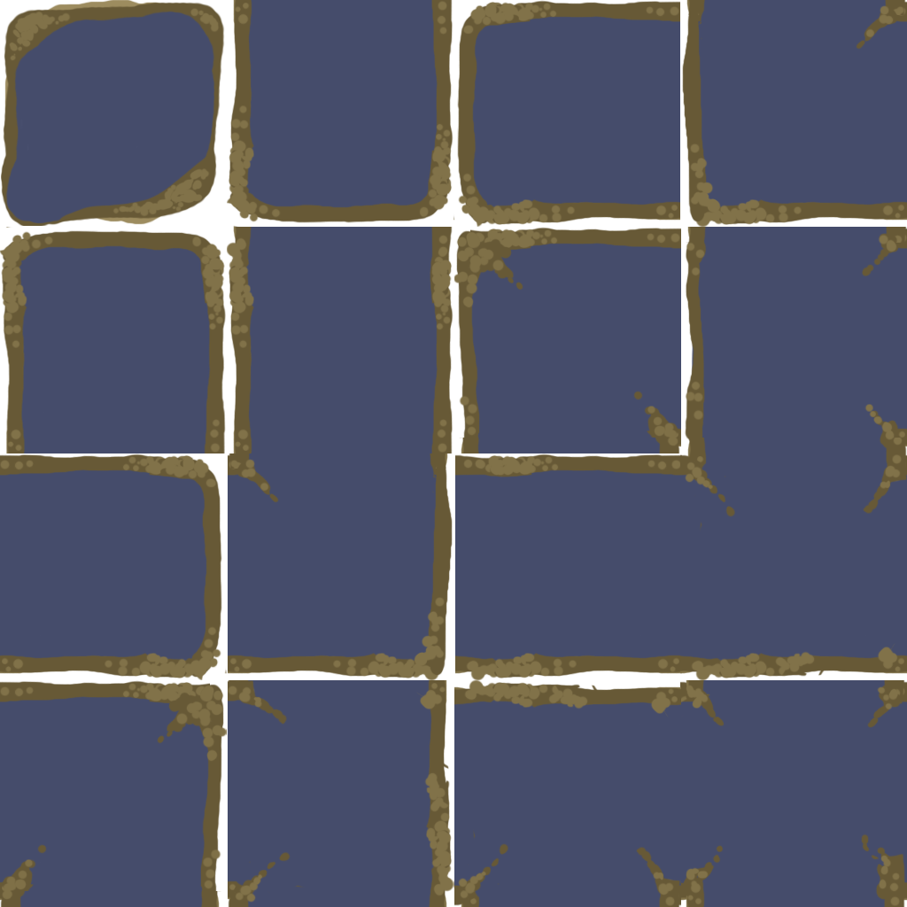
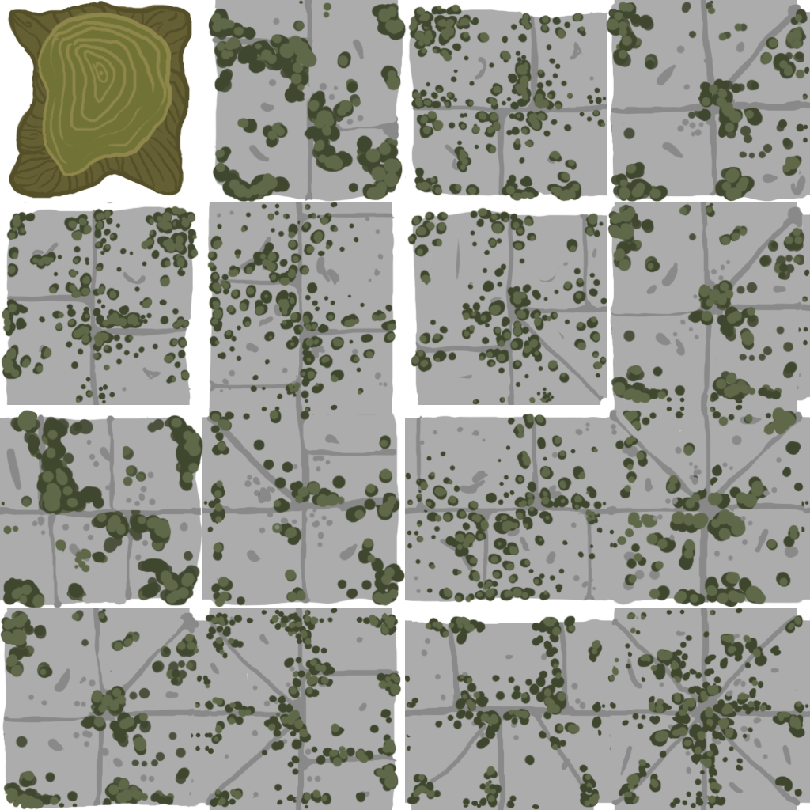

Maize
Maize was an Independant Game Design Project completed in the fall of 2014. I was the Lead Artist and Animatorof a team of 7 people. I did most of the objects and backgrounds in game, as well as deisgned the monster and interface.
Concept Art
For this project I had the pleasure of designing the main monster. The concept designs for this project was critical to understanding mood of the game. After going through many monsters, we decided on going with a large eel concept for the final version.
 Two rejected monster designs.
Semi-final design of the monster.
Final color scheme of the monster.
Animations
Since the monster was animated programmatically, only the people trapped in the maze had to be animated. We decided to have many types of people running around, and below are my final running animations for two of the souls trapped with the monster.
 Walking animations
Level Screens
Maize had distinct levels, with each level representing a different night. Therefore we felt it necessary to have different level screens. Each of the level end screens tells the player whether they have completed or lost the level based upon the number of people they have trapped in the maze for the monster to eat.
End Game Image
Winning Screen Image

Losing Screen Image
Objects
The objects for Maize represented the difficultly of the level. Stone walls were an objec that neither the monster or the people could pass through. However, puddles were an obstacle that the monster could not pass over but the people could. Below are the sprites of the various objects that the player had to navigate in order to keep the monster fed.
Puddle Spritesheet
Stone Wall Spritesheet